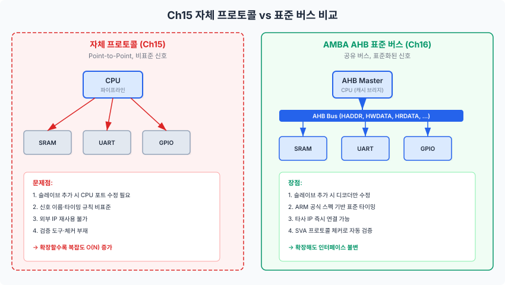
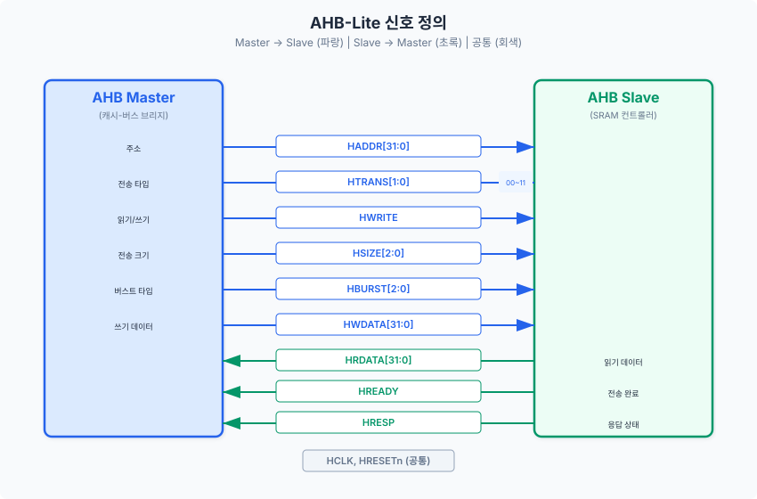
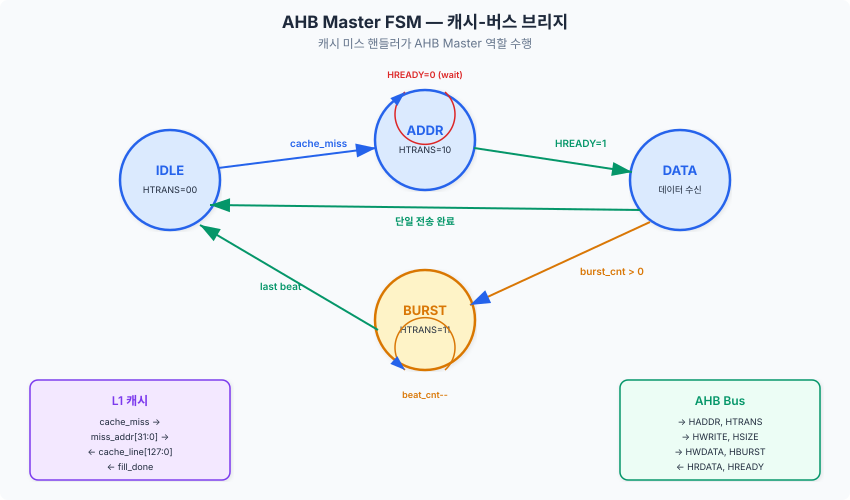
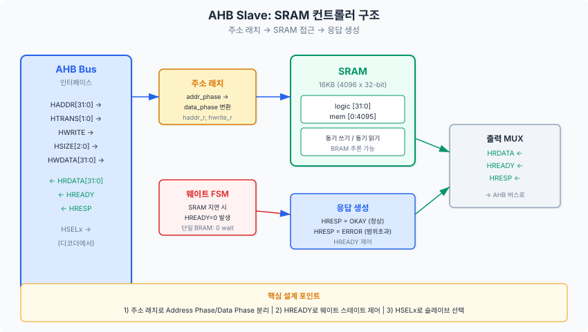
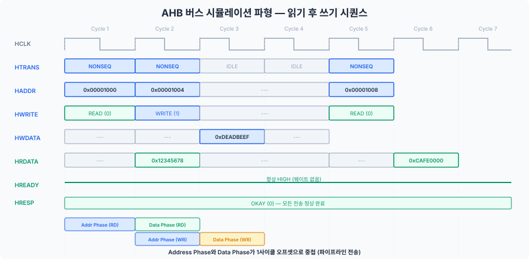

Chapter 15에서 구현한 캐시-메모리 인터페이스는 우리만의 자체 프로토콜이었습니다. 이번 챕터에서는 그것을 산업 표준인 AMBA AHB-Lite 버스로 교체하여, 프로세서가 다양한 외부 IP와 호환 가능한 SoC 구조를 완성합니다. AHB Master, Slave, 인터커넥트를 설계하고 SVA로 프로토콜을 검증합니다.
16.1 왜 버스가 필요한가 — Ch15 자체 프로토콜의 한계
Chapter 15에서 우리는 캐시 미스 처리 FSM이 메모리 컨트롤러와 핸드셰이크하는 인터페이스를 설계하였습니다. mem_req, mem_addr, mem_rdata, mem_valid 같은 신호를 직접 정의하고, 클럭 경계에서의 타이밍도 우리 스스로 결정하였습니다. 프로세서가 단 하나의 메모리만 접근하는 상황에서는 이 방식이 충분히 잘 동작합니다.
그러나 실제 시스템온칩(System-on-Chip, SoC)에서는 프로세서가 접근해야 하는 대상이 SRAM 하나에 그치지 않습니다. UART, GPIO, 타이머 같은 주변 장치(Peripheral)가 추가되어야 하고, 향후 DMA 컨트롤러나 외부 메모리 컨트롤러도 연결해야 할 수 있습니다. 이때 자체 프로토콜을 사용하면 세 가지 심각한 문제가 발생합니다.
자체 프로토콜의 한계
첫째, 확장성(Scalability) 부재입니다. 새 슬레이브를 추가할 때마다 CPU의 포트 목록을 수정해야 합니다. UART를 연결하려면 uart_req, uart_addr, uart_wdata, uart_rdata 같은 전용 신호를 추가해야 하며, GPIO를 연결할 때도 마찬가지입니다. 슬레이브가 N개이면 CPU의 포트 수는 O(N)으로 증가합니다.
둘째, 재사용성(Reusability) 부재입니다. 우리가 정의한 mem_req/mem_valid 핸드셰이크 규약은 이 교재에서만 통용됩니다. 외부에서 설계된 IP(Intellectual Property) 블록 — 예를 들어 ARM에서 제공하는 UART 컨트롤러나 오픈소스 DMA 엔진 — 은 우리의 핀 이름과 타이밍을 알지 못합니다. 매번 "어댑터" 모듈을 작성해야 하며, 이 어댑터의 정확성을 별도로 검증해야 합니다.
셋째, 검증 도구 부재입니다. 산업 현장에서는 버스 프로토콜의 정확성을 자동으로 확인하는 프로토콜 체커(Protocol Checker)를 사용합니다. 그러나 우리만의 비표준 프로토콜에는 검증 IP(VIP)가 존재하지 않으므로, 모든 타이밍 위반을 눈으로 확인해야 합니다.
비유: 자체 프로토콜은 집집마다 다른 규격의 콘센트를 사용하는 것과 같습니다. 새 가전제품(IP)을 살 때마다 전용 어댑터가 필요합니다. 반면 표준 버스는 전국 어디서나 동일한 규격의 콘센트입니다. 플러그만 꽂으면 즉시 동작합니다. AMBA AHB가 바로 "전자 세계의 표준 콘센트"입니다.

그림 16.1: 자체 프로토콜(좌)은 슬레이브 추가 시마다 CPU 포트 수정이 필요하지만, AMBA AHB 표준 버스(우)는 디코더만 수정하면 인터페이스가 불변합니다.
표준 버스가 제공하는 해결책
표준 버스 프로토콜은 위 세 가지 문제를 한꺼번에 해결합니다. CPU는 단일 버스 인터페이스만 구현하면 되고, 슬레이브 추가 시에는 주소 디코더(Address Decoder)만 수정합니다. 모든 참여자가 동일한 신호 이름과 타이밍을 사용하므로, 외부 IP를 그대로 연결할 수 있습니다. ARM에서 제공하는 공식 프로토콜 체커를 활용하면 프로토콜 위반을 시뮬레이션 단계에서 자동 탐지할 수 있습니다.
이것이 우리가 Ch15의 자체 프로토콜을 AMBA AHB로 교체하는 이유입니다. 걱정하지 마십시오. 교체 과정은 "전면 재설계"가 아니라 "인터페이스 래핑(wrapping)"에 가깝습니다. Ch15에서 구현한 캐시 미스 처리 FSM의 내부 로직은 그대로 유지하고, 외부 신호만 AHB 규격에 맞춰 변환하면 됩니다.
16.2 AMBA 버스 패밀리 개요
AMBA(Advanced Microcontroller Bus Architecture)는 ARM이 1996년에 발표한 온칩 버스 규격으로, 현재 전 세계 SoC 설계의 사실상 표준(de facto standard)입니다. AMBA는 단일 프로토콜이 아니라 패밀리(Family)로 구성되어 있으며, 각 프로토콜은 성능 수준과 복잡도에 따라 역할이 다릅니다.
AMBA 패밀리 구성원
AXI(Advanced eXtensible Interface)는 AMBA 4/5에서 정의된 최고 성능 프로토콜입니다. 읽기와 쓰기가 독립된 5개의 채널(AR, R, AW, W, B)로 분리되어 있어, 읽기와 쓰기가 동시에 진행될 수 있습니다. 아웃오브오더(Out-of-Order) 완료를 지원하며, 다중 마스터 환경에서 높은 대역폭을 제공합니다. 그러나 설계 복잡도가 매우 높아, Basys 3 수준의 FPGA에는 과도합니다.
AHB(Advanced High-performance Bus)는 AMBA 2/3에서 정의된 고성능 프로토콜입니다. 단일 채널로 주소 페이즈(Address Phase)와 데이터 페이즈(Data Phase)를 파이프라인 처리하여, 매 사이클 하나의 전송을 완료할 수 있습니다. AXI보다 단순하면서도 높은 대역폭을 제공하므로, SRAM이나 부트 ROM 같은 고속 메모리 접근에 적합합니다. 특히 AHB-Lite 변종은 단일 마스터 환경에 최적화되어 아비터(Arbiter)가 불필요하며, 이것이 우리 교재의 구현 대상입니다.
APB(Advanced Peripheral Bus)는 AMBA 2/4에서 정의된 저전력, 저복잡도 프로토콜입니다. 파이프라인 전송을 지원하지 않으며, 모든 전송이 최소 2사이클에 완료됩니다. UART, GPIO, 타이머 같이 대역폭 요구가 낮은 주변 장치에 사용됩니다. 설계가 극도로 단순하여 게이트 수가 최소화됩니다.
비유: AMBA 패밀리를 도로 체계에 비유하면, AXI는 고속철도(KTX)입니다 — 대용량, 고속, 하지만 건설 비용이 높습니다. AHB는 고속도로입니다 — 빠르고 효율적이며, 대부분의 교통량을 처리합니다. APB는 이면도로입니다 — 느리지만 저렴하고, 동네 가게(주변 장치)에 접근하기에 충분합니다. 우리 SoC에서는 CPU ↔ SRAM 연결에 고속도로(AHB)를, UART/GPIO 연결에 이면도로(APB)를 사용합니다. 이 비유에는 한계가 있습니다 — 실제 AHB 버스에서는 물리적 거리가 아닌 클럭 주파수와 데이터 폭이 대역폭을 결정합니다. 이제부터는 프로토콜 이름으로 돌아갑니다.
그림 16.2: AMBA 패밀리 비교. AHB-Lite(가운데)가 이번 챕터의 구현 대상이며, APB(오른쪽)는 Chapter 17에서 다룹니다.
왜 AHB-Lite인가?
우리 프로세서는 단일 마스터(CPU 1개) 구조입니다. 이 환경에서 AXI는 5채널 인터페이스의 복잡도에 비해 얻는 이점이 적습니다. 반면 AHB-Lite는 파이프라인 전송을 통해 매 사이클 하나의 전송을 처리할 수 있으면서도, 마스터와 슬레이브의 설계 복잡도가 상대적으로 낮습니다. Basys 3의 LUT 20,800개 예산 안에서 프로세서 + 캐시 + 버스 인터커넥트를 모두 수용해야 하므로, AHB-Lite가 성능 대비 면적 효율이 가장 높은 선택입니다.
기준
AXI
AHB-Lite
APB
대역폭
최고 (다채널)
높음 (파이프라인)
낮음 (2사이클)
게이트 수
대규모
중간
최소
다중 마스터
지원
AHB는 지원, Lite는 미지원
미지원
버스트 전송
지원 (OOO)
지원 (순차)
미지원
우리 교재
미사용
CPU ↔ SRAM (Ch16)
UART/GPIO (Ch17)
16.3 AHB 신호 정의
AHB-Lite 프로토콜의 신호는 크게 세 그룹으로 나뉩니다. 마스터 출력 신호(Master → Slave), 슬레이브 출력 신호(Slave → Master), 그리고 공통 신호(클럭, 리셋)입니다. 총 신호 수는 약 10개로, AXI의 수십 개에 비하면 매우 간결합니다.
공통 신호
HCLK은 AHB 버스의 글로벌 클럭입니다. 모든 AHB 전송은 HCLK의 상승 에지(Rising Edge)에 동기화됩니다. 우리 Basys 3 시스템에서는 50MHz로 설정합니다.
HRESETn은 액티브 로우(Active Low) 비동기 리셋입니다. LOW일 때 모든 AHB 인터페이스가 초기 상태로 돌아갑니다. 'n' 접미사는 액티브 로우를 의미하며, AMBA 스펙의 관례입니다.
마스터 출력 신호 (Master → Slave)
신호명
비트 폭
설명
HADDR[31:0]
32
버스 주소. 바이트 주소 지정(Byte Addressing) 사용.
HTRANS[1:0]
2
전송 타입. IDLE(00), BUSY(01), NONSEQ(10), SEQ(11).
HWRITE
1
전송 방향. 1=쓰기, 0=읽기.
HSIZE[2:0]
3
전송 크기. 000=바이트, 001=하프워드, 010=워드.
HBURST[2:0]
3
버스트 타입. SINGLE(000), INCR4(011) 등.
HWDATA[31:0]
32
쓰기 데이터. 데이터 페이즈에서 유효.
슬레이브 출력 신호 (Slave → Master)
신호명
비트 폭
설명
HRDATA[31:0]
32
읽기 데이터. 데이터 페이즈에서 유효.
HREADY
1
전송 완료. HIGH=현재 전송 완료, LOW=웨이트 스테이트.
HRESP
1
전송 응답. OKAY(0)=성공, ERROR(1)=오류.

그림 16.3: AHB-Lite 신호 흐름. 파란 화살표가 마스터 출력, 초록 화살표가 슬레이브 출력입니다.
HTRANS 전송 타입 상세
HTRANS는 AHB 프로토콜에서 가장 중요한 신호 중 하나입니다. 4가지 전송 타입이 있으며, 이 값에 따라 슬레이브의 동작이 결정됩니다.
HTRANS
이름
의미
2'b00
IDLE
버스 유휴. 슬레이브는 이 전송을 무시하고 OKAY 응답.
2'b01
BUSY
버스트 중 마스터 지연. 슬레이브는 이 전송을 무시.
2'b10
NONSEQ
단일 전송 또는 버스트의 첫 번째 전송. 새로운 주소.
2'b11
SEQ
버스트의 연속 전송. 이전 주소에서 자동 증분.
SystemVerilog 패키지 정의
위 상수들을 SystemVerilog 패키지로 정리하면, 모든 모듈에서 일관된 타입을 사용할 수 있습니다.
package ahb_pkg;
// HTRANS[1:0] — 전송 타입
typedef enum logic [1:0] {
HTRANS_IDLE = 2'b00, // 버스 유휴 상태
HTRANS_BUSY = 2'b01, // 버스트 중 지연
HTRANS_NONSEQ = 2'b10, // 새로운 전송 시작
HTRANS_SEQ = 2'b11 // 버스트 연속 전송
} htrans_t;
// HBURST[2:0] — 버스트 타입
typedef enum logic [2:0] {
HBURST_SINGLE = 3'b000, // 단일 전송
HBURST_INCR = 3'b001, // 길이 미정 증분 버스트
HBURST_INCR4 = 3'b011 // 4-beat 증분 버스트
} hburst_t;
// HSIZE[2:0] — 전송 크기
typedef enum logic [2:0] {
HSIZE_BYTE = 3'b000, // 8비트
HSIZE_HALF = 3'b001, // 16비트
HSIZE_WORD = 3'b010 // 32비트
} hsize_t;
// HRESP — 전송 응답
typedef enum logic {
HRESP_OKAY = 1'b0, // 전송 성공
HRESP_ERROR = 1'b1 // 전송 오류
} hresp_t;
endpackage
16.4 AHB 프로토콜 타이밍
AHB 프로토콜의 가장 핵심적인 특성은 파이프라인 전송(Pipelined Transfer)입니다. 모든 전송은 두 개의 페이즈로 나뉘며, 이 두 페이즈가 1사이클 오프셋으로 중첩됩니다. 이 메커니즘 덕분에 AHB는 매 사이클 하나의 전송을 완료할 수 있습니다.
두 페이즈 구조
주소 페이즈(Address Phase)에서 마스터는 HADDR, HTRANS, HWRITE, HSIZE, HBURST를 출력합니다. 이 신호들은 "다음에 어떤 전송을 할 것인가"를 슬레이브에 알려줍니다.
데이터 페이즈(Data Phase)에서 실제 데이터가 전달됩니다. 쓰기 전송이면 마스터가 HWDATA를 출력하고, 읽기 전송이면 슬레이브가 HRDATA를 출력합니다. 핵심은 이것입니다: 현재 사이클의 데이터 페이즈와 다음 전송의 주소 페이즈가 동시에 진행됩니다.
이 구조는 우리가 Part 4에서 배운 프로세서 파이프라인과 원리가 동일합니다. 프로세서에서 IF 스테이지가 다음 명령어를 가져오는 동안 EX 스테이지가 현재 명령어를 실행하듯이, AHB에서도 주소 페이즈가 다음 전송을 준비하는 동안 데이터 페이즈가 현재 전송을 완료합니다.
그림 16.4: AHB 파이프라인 전송 타이밍. 주소 페이즈(T1)와 데이터 페이즈(T2)가 1사이클 오프셋으로 중첩됩니다. T3~T4에서 HREADY=LOW로 웨이트 스테이트가 발생하면, 마스터는 주소/제어 신호를 유지해야 합니다.
단일 전송 (SINGLE Transfer)
가장 기본적인 전송입니다. 마스터가 HTRANS=NONSEQ를 출력하면 단일 전송이 시작됩니다. 주소 페이즈 1사이클 + 데이터 페이즈 1사이클 = 총 2사이클이 소요됩니다. 단, 파이프라인 덕분에 연속된 단일 전송은 매 사이클 하나씩 완료됩니다.
버스트 전송 (Burst Transfer)
캐시 라인 채움(Cache Line Fill)처럼 연속된 주소에 대해 여러 워드를 전송할 때 사용합니다. 첫 번째 전송은 HTRANS=NONSEQ이고, 이후 전송은 HTRANS=SEQ입니다. 4-beat 증분 버스트(INCR4)의 경우, 첫 주소 이후 자동으로 +4(워드 단위)씩 증분됩니다.
4워드 캐시 라인(128비트)을 채우려면 INCR4 버스트를 사용합니다. 주소 페이즈 1사이클 + 데이터 페이즈 4사이클 = 총 5사이클이 소요됩니다. 이는 단일 전송 4회(8사이클)보다 3사이클 더 효율적입니다.
웨이트 스테이트 (Wait State)
슬레이브가 즉시 응답할 수 없는 경우, HREADY를 LOW로 내려 웨이트 스테이트를 삽입합니다. 예를 들어 느린 Flash 메모리는 읽기에 여러 사이클이 필요하므로, 데이터가 준비될 때까지 HREADY=LOW를 유지합니다.
이것이 AHB 프로토콜에서 가장 흔한 오류 지점입니다. HREADY가 LOW인 동안, 마스터는 현재 출력 중인 주소/제어 신호를 반드시 유지해야 합니다. 신호를 변경하면 프로토콜 위반이며, 데이터 손상이 발생합니다.
전송 타입별 타이밍 요약
전송 유형
HTRANS
최소 사이클
파이프라인 효과
유휴
IDLE (00)
1
슬레이브 무시, OKAY 응답
단일 전송
NONSEQ (10)
2 (Addr+Data)
연속 시 1사이클/전송
버스트 첫 전송
NONSEQ (10)
2
이후 SEQ와 중첩
버스트 연속
SEQ (11)
1
매 사이클 1워드 전송
웨이트 삽입
유지
+N사이클
HREADY=LOW 동안 정지
16.5 AHB Master 설계: 캐시-버스 브리지
이제 실제 설계로 들어갑니다. AHB Master는 캐시 미스가 발생했을 때 AHB 버스를 통해 외부 메모리에 접근하는 모듈입니다. Chapter 15에서 구현한 캐시 미스 처리 FSM의 "외부 인터페이스"를 AHB 규격으로 변환하는 것이 핵심입니다.
설계 요구사항
AHB Master는 두 개의 인터페이스를 갖습니다. 캐시 측에서는 cache_miss, miss_addr, fill_data, fill_valid 등의 신호로 통신합니다. 버스 측에서는 HADDR, HTRANS, HWDATA, HRDATA 등의 AHB 신호로 통신합니다. Master의 역할은 이 두 인터페이스 사이의 프로토콜 변환입니다.
FSM 설계
Master FSM은 5개의 상태로 구성됩니다.
상태
HTRANS 출력
동작
IDLE
00 (IDLE)
캐시 미스 대기. cache_miss=1이면 ADDR로 전이
ADDR
10 (NONSEQ)
주소 페이즈. HADDR 출력. HREADY=1이면 DATA 또는 BURST로 전이
DATA
—
데이터 페이즈. 쓰기 시 HWDATA 출력, 읽기 시 HRDATA 수신
BURST
11 (SEQ)
버스트 연속 전송. beat_cnt 감소. 마지막 beat이면 DATA로 전이
DONE
00 (IDLE)
캐시에 완료 알림. 즉시 IDLE로 복귀

그림 16.5: AHB Master FSM. 캐시 인터페이스(좌)와 AHB 버스 인터페이스(우) 사이의 프로토콜 변환을 수행합니다.
핵심 구현: HREADY 기반 스톨 처리
Master 설계에서 가장 중요한 부분은 HREADY=LOW 처리입니다. ADDR 상태에서 HREADY가 LOW이면, 마스터는 HADDR과 HTRANS를 유지한 채 ADDR 상태에 머물러야 합니다. 이것은 다음 코드의 if (hready) 조건으로 구현됩니다.
// FSM 다음 상태 로직 (핵심 발췌)
always_comb begin
next_state = state;
case (state)
ST_IDLE: begin
if (cache_miss)
next_state = ST_ADDR;
end
ST_ADDR: begin
// HREADY=1일 때만 다음 상태로 전이
// HREADY=0이면 현재 상태 유지 → 신호 불변
if (hready)
next_state = burst_mode ? ST_BURST : ST_DATA;
end
ST_DATA: begin
if (hready)
next_state = ST_DONE;
end
ST_BURST: begin
if (hready) begin
if (beat_cnt == 2'd0)
next_state = ST_DATA; // 마지막 beat
else
next_state = ST_BURST; // 연속
end
end
ST_DONE: next_state = ST_IDLE;
default: next_state = ST_IDLE;
endcase
end
AHB 출력 신호 생성
// AHB 출력 (조합 로직)
always_comb begin
haddr = '0;
htrans = HTRANS_IDLE;
hwrite = 1'b0;
hsize = HSIZE_WORD;
hburst = HBURST_SINGLE;
hwdata = '0;
case (state)
ST_ADDR: begin
haddr = addr_r;
htrans = HTRANS_NONSEQ; // 새 전송 시작
hwrite = write_r;
hburst = burst_mode ? HBURST_INCR4 : HBURST_SINGLE;
end
ST_DATA: begin
hwdata = wdata_r; // 쓰기 데이터 출력
end
ST_BURST: begin
haddr = addr_r;
htrans = HTRANS_SEQ; // 버스트 연속
hwrite = write_r;
hburst = HBURST_INCR4;
hwdata = wdata_r;
end
default: ;
endcase
end
16.6 AHB Slave 설계: SRAM 컨트롤러
AHB Slave는 마스터의 요청을 받아 실제 하드웨어(이 경우 SRAM)를 제어하는 모듈입니다. Slave 설계의 핵심은 주소 페이즈와 데이터 페이즈의 분리입니다. 주소는 한 사이클 먼저 도착하므로, Slave는 주소를 래치(Latch)한 뒤 다음 사이클에 데이터를 처리합니다.
SRAM Slave 구조
우리 SRAM Slave는 다음 네 가지 블록으로 구성됩니다.
블록
역할
주소 래치
Address Phase의 HADDR, HWRITE를 1사이클 지연시켜 Data Phase에 사용
SRAM 배열
16KB(4096 x 32비트) 메모리 배열. BRAM으로 추론
웨이트 FSM
SRAM 접근 지연 시 HREADY=LOW 생성 (본 구현에서는 0-wait)
응답 생성
HRESP(OKAY/ERROR) 및 HREADY 출력

그림 16.6: AHB Slave(SRAM 컨트롤러) 내부 구조. 주소 래치가 Address Phase와 Data Phase를 분리합니다.
주소 래치 구현
AHB의 주소 페이즈/데이터 페이즈 파이프라인에서, 슬레이브는 주소 페이즈에서 받은 정보를 데이터 페이즈까지 기억해야 합니다. 이를 위해 addr_r, write_r, valid_r 레지스터를 사용합니다.
// 유효 전송 판별
wire valid_transfer = hsel && hready_in &&
(htrans == HTRANS_NONSEQ || htrans == HTRANS_SEQ);
// 주소 래치 (Address Phase → Data Phase)
always_ff @(posedge hclk or negedge hreset_n) begin
if (!hreset_n) begin
valid_r <= 1'b0;
write_r <= 1'b0;
addr_r <= '0;
error_r <= 1'b0;
end else if (hready_in) begin
valid_r <= valid_transfer;
write_r <= hwrite;
addr_r <= haddr[ADDR_BITS+1:2]; // 바이트→워드 주소 변환
error_r <= valid_transfer && !addr_in_range;
end
end
haddr[ADDR_BITS+1:2]로 하위 2비트를 버리는 이유는, AHB가 바이트 주소 지정(Byte Addressing)을 사용하는 반면 SRAM은 워드 단위로 접근하기 때문입니다. 예를 들어 바이트 주소 0x0004는 워드 주소 1에 해당합니다.
SRAM 읽기/쓰기
// SRAM 메모리 배열 (BRAM 추론 가능)
logic [31:0] mem [0:MEM_DEPTH-1];
// SRAM 쓰기 (Data Phase)
always_ff @(posedge hclk) begin
if (valid_r && write_r && !error_r)
mem[addr_r] <= hwdata;
end
// SRAM 읽기 (Data Phase)
always_ff @(posedge hclk) begin
if (valid_r && !write_r && !error_r)
hrdata <= mem[addr_r];
else
hrdata <= '0;
end
응답 생성
본 SRAM 컨트롤러는 0-wait state로 동작합니다. 즉, HREADY는 항상 HIGH이며, 슬레이브가 웨이트 스테이트를 삽입하지 않습니다. Basys 3의 BRAM은 1사이클 읽기/쓰기를 지원하므로 이 설정이 가능합니다.
// 0-wait state: HREADY 항상 HIGH
assign hready_out = 1'b1;
// 주소 범위 초과 시 ERROR 응답
assign hresp = error_r ? HRESP_ERROR : HRESP_OKAY;
만약 느린 외부 메모리(Flash 등)에 접속하는 슬레이브를 설계한다면, HREADY를 제어하는 웨이트 FSM이 필요합니다. 예를 들어 2사이클 읽기 지연이 있는 Flash 슬레이브는, 첫 사이클에 HREADY=LOW를 출력하고 두 번째 사이클에 HREADY=HIGH + HRDATA를 출력합니다.
16.7 AHB 인터커넥트: 단일 마스터 버스
AHB 인터커넥트(Interconnect)는 마스터와 슬레이브들을 연결하는 "교통 관제 시스템"입니다. 단일 마스터 AHB-Lite 환경에서 인터커넥트는 세 가지 컴포넌트로 구성됩니다: 주소 디코더(Address Decoder), 슬레이브 멀티플렉서(Slave MUX), 그리고 기본 슬레이브(Default Slave).
주소 디코더
주소 디코더는 HADDR의 상위 비트를 확인하여 해당 주소가 어느 슬레이브에 속하는지 판별하고, 해당 슬레이브의 HSEL(Slave Select) 신호를 활성화합니다. 우리 메모리 맵은 다음과 같습니다.
주소 범위
슬레이브
HSEL
0x0000_0000 ~ 0x0000_3FFF
Slave 0: SRAM (16KB)
s0_hsel
0x4000_0000 ~ 0x4FFF_FFFF
Slave 1: APB Bridge (Ch17)
s1_hsel
기타 모든 주소
Default Slave (ERROR 응답)
hsel_default
// 주소 디코더: HADDR[31:28]로 슬레이브 선택
always_comb begin
s0_hsel = 1'b0;
s1_hsel = 1'b0;
hsel_default = 1'b0;
case (m_haddr[31:28])
4'h0: s0_hsel = 1'b1; // 0x0xxx_xxxx → SRAM
4'h4: s1_hsel = 1'b1; // 0x4xxx_xxxx → APB Bridge
default: hsel_default = 1'b1; // 미매핑 → ERROR
endcase
end
그림 16.7: AHB-Lite 인터커넥트. 주소 디코더가 HSELx를 생성하고, 슬레이브 MUX가 활성 슬레이브의 응답을 마스터에 전달합니다.
슬레이브 멀티플렉서
마스터는 하나의 HRDATA, HREADY, HRESP 포트만 가지고 있으므로, 여러 슬레이브의 응답 중 현재 활성인 슬레이브의 응답만 선택해야 합니다. 이것이 슬레이브 MUX의 역할입니다.
중요한 점은, MUX의 선택 신호가 래치된 HSEL이어야 한다는 것입니다. 주소 디코더는 주소 페이즈에서 HSEL을 생성하지만, 슬레이브의 응답은 데이터 페이즈에서 나옵니다. 따라서 HSEL을 1사이클 래치하여 데이터 페이즈에서 올바른 슬레이브를 선택합니다.
// HSEL 래치 (Address Phase → Data Phase)
logic [1:0] sel_r;
always_ff @(posedge hclk or negedge hreset_n) begin
if (!hreset_n)
sel_r <= 2'b00;
else if (m_hready)
sel_r <= {s1_hsel, s0_hsel};
end
// 슬레이브 MUX
always_comb begin
case (sel_r)
2'b01: begin // Slave 0 (SRAM)
m_hrdata = s0_hrdata;
m_hready = s0_hready_out;
m_hresp = s0_hresp;
end
2'b10: begin // Slave 1 (APB Bridge)
m_hrdata = s1_hrdata;
m_hready = s1_hready_out;
m_hresp = s1_hresp;
end
default: begin // Default Slave
m_hrdata = '0;
m_hready = 1'b1;
m_hresp = HRESP_ERROR;
end
endcase
end
기본 슬레이브 (Default Slave)
기본 슬레이브는 어떤 슬레이브에도 매핑되지 않는 주소에 접근했을 때 ERROR 응답을 반환합니다. 이 모듈이 없으면, 미매핑 주소에 대한 읽기는 불확정(undefined) 데이터를 반환하고, 쓰기는 무시됩니다. 기본 슬레이브는 별도 모듈이 아니라 MUX의 default 분기로 구현합니다.
신호 분배
마스터의 주소/제어/데이터 신호는 모든 슬레이브에 동시에 전달됩니다. 슬레이브는 자신의 HSEL이 활성일 때만 전송에 응답하고, 비활성이면 무시합니다.
설계를 완료했으니 이제 검증할 차례입니다. AHB 버스 검증은 두 가지 접근법을 병행합니다. 첫째, 전통적인 테스트벤치로 기능적 정확성(Functional Correctness)을 확인합니다. 둘째, SVA(SystemVerilog Assertion)로 프로토콜 타이밍 규칙의 준수 여부를 자동 검사합니다.
테스트벤치 구성
테스트벤치는 인터커넥트와 SRAM 슬레이브를 인스턴스화하고, 마스터 역할의 테스트 시퀀스를 실행합니다. 검증할 시나리오는 다음과 같습니다.
테스트
시나리오
확인 사항
TEST 1
단일 워드 쓰기 3회
쓰기 완료, HRESP=OKAY
TEST 2
단일 워드 읽기 3회
읽기 데이터 일치 확인
TEST 3
쓰기 → 읽기 일관성
쓴 값과 읽은 값이 동일
TEST 4
미매핑 주소 접근
Default Slave ERROR 응답
AHB 쓰기 태스크
task automatic ahb_write(
input logic [31:0] addr,
input logic [31:0] data
);
// 주소 페이즈
@(posedge hclk);
m_haddr <= addr;
m_htrans <= HTRANS_NONSEQ;
m_hwrite <= 1'b1;
m_hsize <= HSIZE_WORD;
m_hburst <= HBURST_SINGLE;
// 데이터 페이즈
@(posedge hclk);
while (!m_hready) @(posedge hclk); // 웨이트 스테이트 처리
m_hwdata <= data;
m_htrans <= HTRANS_IDLE;
@(posedge hclk);
while (!m_hready) @(posedge hclk);
endtask
AHB 읽기 태스크
task automatic ahb_read(
input logic [31:0] addr,
output logic [31:0] data
);
// 주소 페이즈
@(posedge hclk);
m_haddr <= addr;
m_htrans <= HTRANS_NONSEQ;
m_hwrite <= 1'b0;
m_hsize <= HSIZE_WORD;
m_hburst <= HBURST_SINGLE;
// 데이터 페이즈
@(posedge hclk);
while (!m_hready) @(posedge hclk);
m_htrans <= HTRANS_IDLE;
@(posedge hclk);
while (!m_hready) @(posedge hclk);
data = m_hrdata; // 읽기 데이터 캡처
endtask

그림 16.8: 시뮬레이션 파형. 읽기(Cycle 1~2)와 쓰기(Cycle 2~3)가 파이프라인으로 중첩되는 모습을 확인할 수 있습니다.
SVA 프로토콜 체커
SVA(SystemVerilog Assertion)는 설계 의도를 시간적 속성(Temporal Property)으로 표현하고, 시뮬레이션 중 자동으로 검사하는 기법입니다. AHB 프로토콜에는 반드시 지켜야 할 타이밍 규칙이 있으며, 이를 SVA로 코딩하면 프로토콜 위반을 즉시 탐지할 수 있습니다.
이 어서션의 의미는 다음과 같습니다: "HREADY가 LOW이고 유효 전송(IDLE이 아닌)이 진행 중이면, 다음 사이클에서 HADDR, HTRANS, HWRITE가 모두 안정(stable)해야 한다." |=>는 "다음 사이클에서"를 의미하는 SVA의 시간 연산자입니다.
[평가] 우리 SoC에서 AHB-Lite 대신 AXI를 사용한다고 가정하면, Basys 3의 LUT 사용량이 어떻게 변할지 추정하고, AHB-Lite 선택의 타당성을 평가하시오.
[적용] 테스트벤치에 INCR4 버스트 읽기 테스트를 추가하시오. 4개의 연속 주소에 데이터를 쓴 후, 버스트로 읽어서 모든 데이터가 일치하는지 검증하시오.
다음 챕터 예고
다음 Chapter 17에서는 AHB 버스에 APB 브리지(AHB-to-APB Bridge)를 연결하여, UART, GPIO, 타이머 같은 저속 주변 장치를 SoC에 통합합니다. 이번 챕터에서 설계한 AHB 인터커넥트의 Slave 1 포트가 APB 브리지로 연결되며, 프로토콜 변환 FSM을 설계합니다. 최종적으로 UART를 통해 "Hello RISC-V" 메시지를 PC로 전송하는 마일스톤에 도달합니다.